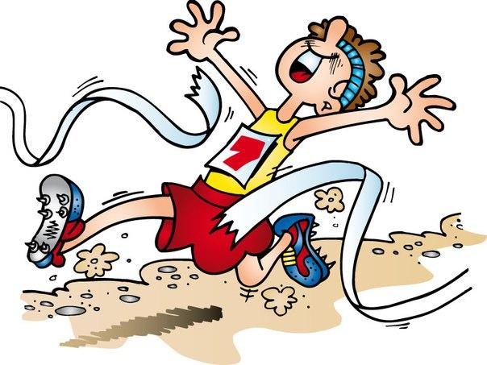
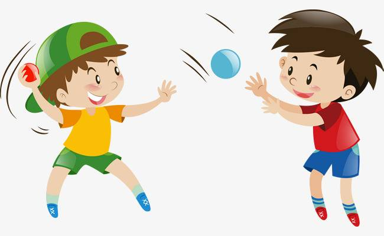

1. Второе название лёгкой атлетики?
2. Что включает в себя легкая атлетика?

3. Бег, на какие дистанции будет развивать выносливость?
4. Как правильно дышать во время бега?
5. Какого бега не бывает в специальных упражнениях бегуна?
6. Нужно ли выполнять разминку перед занятиями физкультурой и спортом?
7. Что НЕ метают в лёгкой атлетике?

8. Выберите НЕВЕРНОЕ утверждение: При занятиях легкой атлетикой учащийся должен

9. Что должен делать учащийся во время метания:
10. К спринту относится бег на: